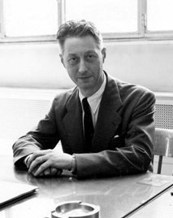

Krzywe Bézier w robotyce
Kacper Drążyk

Planowanie trajektorii

Point to point

- interpolacja liniowa pomiędzy punktami
- konieczne zatrzymanie w każdym punkcie
- małe wymagania obliczeniowe
Corner smoothing

- łagodniejsze zmiany kierunku
- nie każdy punkt jest osiągany
- większe wymagania obliczeniowe
Krzywe Bézier

- dowolna płynność ruchu
- punkty mogą być osiągane
- największe wymagania obliczeniowe
Czym są krzywe Bézier
\[\begin{cases} x = f_1(t)\\ y = f_2(t)\\ z = f_3(t)\\t \in [0,1] \end{cases} \]

Historia

Paul de Casteljau

Pierre Bézier
Peugeot 204
Gdzie są stosowane?


Opis matematyczny

Interpolacja liniowa
\[\displaystyle \mathbf {P} (t)=(1-t)\mathbf {P} _{0}+t\mathbf {P} _{1},\ 0\leq t\leq 1\]
Algorytm de Casteljau
Krzywa Bézier II rzędu
Krzywa Bézier III rzędu
Krzywa Bézier XII rzędu
Równanie opisaujące krzywą III rzędu
\[\displaystyle \mathbf {B} (t)=(1-t)^{3}\mathbf {P} _{0}+3(1-t)^{2}t\mathbf {P} _{1}+3(1-t)t^{2}\mathbf {P} _{2}+t^{3}\mathbf {P} _{3},\ 0\leq t\leq 1\]
\[\mathbf B(t) = \begin{bmatrix} 1 & t & t^2 & t^3 \end{bmatrix} \cdot \begin{bmatrix} 1 & 0 & 0 & 0\\-3 & 3 & 0 & 0\\3 & -6 & 3 & 0\\-1 & 3 & -3 & 1\\ \end{bmatrix} \cdot \begin{bmatrix} P_0 \\ P_1 \\ P_2 \\ P_3 \end{bmatrix}\]
Wielomiany Bernsteina

\[\begin{split} B(t) = \,& P_0 \cdot (-t^3 + 3t^2 -3t +1) + \\& P_1 \cdot (3t^3 - 6t^2 + 3t) +\\& P_2 \cdot (-3t^3 +3t^2) +\\&P_3 \cdot (t^3) \end{split} \]
Zakres oddziaływań punktów

Krzywe Bézier nie umożliwiają kontroli lokalnej
Spline - funkcja sklejana
Ciągłość
\[\mathbf B(t) = \begin{bmatrix} 1 & t & t^2 & t^3 \end{bmatrix} \cdot \begin{bmatrix} 1 & 0 & 0 & 0\\-3 & 3 & 0 & 0\\3 & -6 & 3 & 0\\-1 & 3 & -3 & 1\\ \end{bmatrix} \cdot \begin{bmatrix} P_0 \\ P_1 \\ P_2 \\ P_3 \end{bmatrix}\]
\[ \frac{d}{dt} \mathbf B(t) = \begin{bmatrix} 0 & 1 & 2t & 3t^2 \end{bmatrix} \cdot \begin{bmatrix} 1 & 0 & 0 & 0\\-3 & 3 & 0 & 0\\3 & -6 & 3 & 0\\-1 & 3 & -3 & 1\\ \end{bmatrix} \cdot \begin{bmatrix} P_0 \\ P_1 \\ P_2 \\ P_3 \end{bmatrix}\]
\[ \frac{d^2}{dt^2} \mathbf B(t) = \begin{bmatrix} 0 & 0 & 2 & 6t \end{bmatrix} \cdot \begin{bmatrix} 1 & 0 & 0 & 0\\-3 & 3 & 0 & 0\\3 & -6 & 3 & 0\\-1 & 3 & -3 & 1\\ \end{bmatrix} \cdot \begin{bmatrix} P_0 \\ P_1 \\ P_2 \\ P_3 \end{bmatrix}\]
C1 - prędkość
C2 - przyspieszenie
Inne opcje
Zadanie robotyka

Badania naukowe
Aplikacja
https://kdrazyk.github.io/ → Aplikacja
Więcej informacji
Freya Holmér
Dziękuję za uwagę
Najważniejszy wniosek:
Płynniejsze trajektorie ograniczają drgania i zużycie części, a przez to zwiększają wydajność oraz dokładność robotów.
Bibliografia
- Wikipedia, Bézier curve, https://en.wikipedia.org/wiki/B%C3%A9zier_curve
- Wikipedia, B-spline, https://en.wikipedia.org/wiki/B-spline
- Wikipedia, NURBS, https://pl.wikipedia.org/wiki/NURBS
- Li et al., Smooth Interpolation Design with Consideration of Corner Tolerance Constraints for Robotics, https://www.mdpi.com/2076-3417/13/15/8789
- Li et al., A High-Precision Planar NURBS Interpolation System Based on Segmentation Method for Industrial Robot, https://www.mdpi.com/2076-3417/13/24/13210
- Freya Holmér, The Continuity of Splines, https://www.youtube.com/watch?v=jvPPXbo87ds
- Freya Holmér, The Beauty of Bézier Curves https://www.youtube.com/watch?v=aVwxzDHniEw
- The Coding Train / Simon Tiger, aplikacja do rysowania krzywych bézier, https://editor.p5js.org/codingtrain/sketches/_R7RgtGfA
Źródła rysunków
https://en.wikipedia.org/wiki/B%C3%A9zier_curve-/media/File:Bezier_curve.svghttps://alchetron.com/Paul-de-Casteljauhttps://en.wikipedia.org/wiki/File:Img-Pierre_Bézier.jpghttps://en.wikipedia.org/wiki/Peugeot_204-/media/File:Peugeot_204_front_20120630.jpghttps://www.fanuc.eu/~/media/corporate/products/robots/lrmate/generic/400x600/int-ro-pr-lrm200-l-1.jpghttps://xkcd.com/2821/https://tech-mate.pl/wp-content/uploads/2022/10/kerfus-tm-scaled.jpghttps://robotics.stackexchange.com/questions/18102/what-are-the-equations-of-a-s-curve-position-path